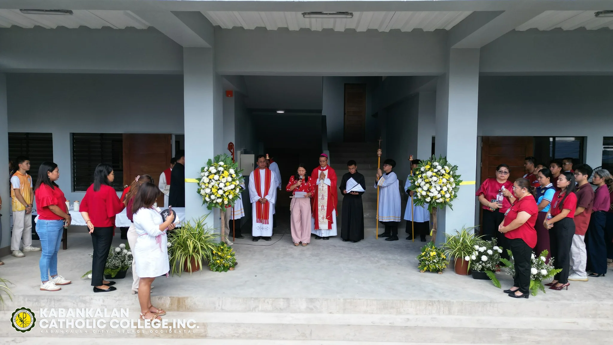

Business & Accountancy
BSBA, BSA, BSAIS, and BSMA pathways for students who want to work with organizations, numbers, and ideas.
A closer look at what learning at KCC can feel like: practical, purposeful, and connected to the people you hope to serve.
KCC’s academic programs help students connect classroom knowledge with the decisions, projects, and responsibilities they will meet in the world beyond college.
From business and accountancy to information technology, education, tourism, psychology, and criminology, students are guided to build real competence while staying rooted in strong values.

Ask our admissions team about current offerings, requirements, and the pathway that fits your goals.
BSBA, BSA, BSAIS, and BSMA pathways for students who want to work with organizations, numbers, and ideas.
BSIT learning for future-ready professionals who want to build solutions through software, systems, and technology.
Education, psychology, philosophy, tourism, and criminology for people who want their work to create a wider good.
Send us a message and we will help you find the current course information and admission requirements.